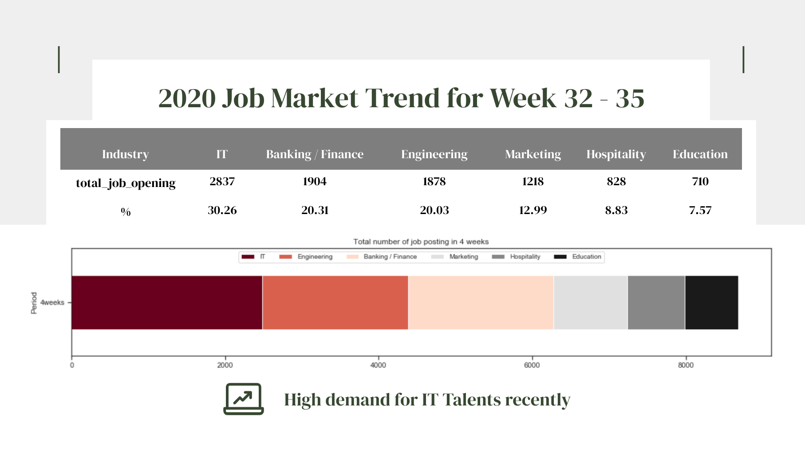
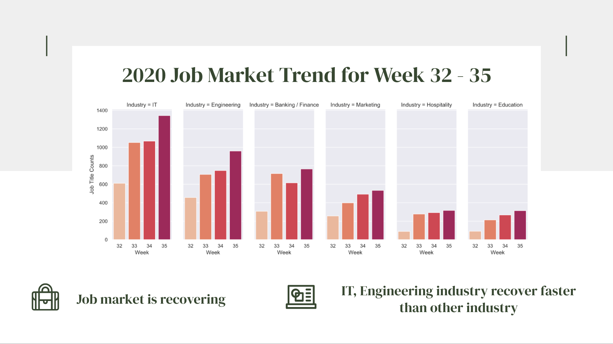

JOB MARKET TREND ANALYSIS
WEB SCRAPING: RECRUIT HK, CTGOODJOBS
- BUSINESS VALUES:
- - With IT getting more paramount in modern days, this report is to provide some insights on trend of recovery in the job market.
- - To unveil the rising demand for IT experts and understand the job package for IT talents in various industries so to create more opportunities for digital-based institutions.
- DATA COLLECTION:
- - Using Selenium for web scraping on two local recruitment websites: Recruit HK and CTgoodjobs.
- - Industry Covered: Banking / Finance, Education, Engineering, Hospitality, IT, Marketing
- Date Period: Aug 10 - Sept 5 (Week 32 - Week 35)
- - Remove all duplicates: 9375 rows of records
- - Remove weekly duplicates: 12902 rows of records
MARKET TREND:
We can see that there are high demand for IT talents comparing to other industries. During the period of pandemic, the job opening is increasing week by week.

